mysql一种可拓展无锁的WAL新设计【译】
阅读次数:
原文：《New Lock free, scalable WAL design》
The Write Ahead Log (WAL) is one of the most important components of a database. All the changes to data files are logged in the WAL (called the redo log in InnoDB). This allows to postpone the moment when the modified pages are flushed to disk, still protecting from data losses.
预写日志 (WAL) 是数据库最重要的组件之一。对数据文件的所有更改都记录在 WAL 中（在 InnoDB 中称为重做日志）。这允许修改的页面推迟刷新到磁盘，与此同时还能防止数据丢失。
The write intense workloads had performance limited by synchronization in which many user threads were involved, when writing to the redo log. This was especially visible when testing performance on servers with multiple CPU cores and fast storage devices, such as modern SSD disks.
在很多用户线程并发写入重做日志时，多线程间的同步限制了写入密集型工作负载的性能。这一点在具有多个 CPU 内核和快速存储设备（例如现代 SSD 磁盘）的服务器上测试性能时尤为明显。
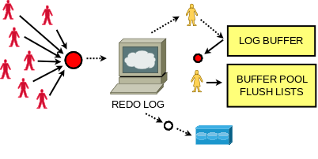
We needed a new design that would address the problems faced by our customers and users today and also in the future. Tweaking the old design to achieve scalability was not an option any more. The new design also had to be flexible, so that we can extend it to do sharding and parallel writes in the future. With the new design we wanted to ensure that it would work with the existing APIs and most importantly not break the contract that the rest of InnoDB relies on. A challenging task under these constraints.
我们需要一种新的设计来解决我们的客户和用户现在和将来面临的问题。调整旧设计以实现可扩展性不再是一种选择。新的设计也必须是灵活的，以便我们可以扩展它以在未来进行分片和并行写入。通过新设计，我们希望确保它可以兼容现有 API 一起使用，最重要的是不会破坏 InnoDB 其余部分所依赖的协议。在这些限制条件下，这是一项具有挑战性的任务。
Redo log can be seen as a producer/consumer persistent queue. The user threads that do updates can be seen as the producers and when InnoDB has to do crash recovery the recovery thread is the consumer. InnoDB doesn’t read from the redo log when the server is running.
重做日志可以看作是一个生产者/消费者持久化队列。执行更新操作的用户线程可以被视为生产者，当 InnoDB 执行崩溃恢复时，恢复线程是消费者。InnoDB 在服务器运行时不会读取重做日志。
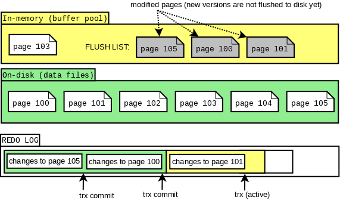
But writing a scalable log with multiple producers is only one part of the problem. There are InnoDB specific details that also need to work. The biggest challenge was to preserve the total order of the dirty page list (a.k.a the flush list). There is one per buffer pool. Changes to pages are applied within so-called mini transactions (mtr), which allow to modify multiple pages in atomic way. When a mini transaction commits, it writes its own log records to the log buffer, increasing the global modification number called LSN (Log Sequence Number). The mtr has the list of dirty pages that need to be added to the buffer pool specific flush list. Each flush list is ordered on the LSN. In the old design we held the log_sys_t::mutex and the log_sys_t::flush_order_mutex in a lock step manner to ensure that the total order on modification LSN was maintained in the flush lists.
但是多个生产者同时写一个可伸缩日志只是其中一个问题。还有一些 InnoDB 具体的细节也需要纳入考虑范围。最大的挑战是保证脏页列表（flush list，刷新列表）的顺序性。每个缓冲池有一个脏页刷新列表。mini transactions(mtr)，一种保证原子性修改多个页面的方式，日志页面的修改就是在mtr里应用生效的。当一个mtr提交时，它会将自己的日志记录写入日志缓冲区，同时递增全局变更序号LSN（Log Sequence Number）。mtr 具有需要添加到缓冲池特定刷新列表的脏页列表。刷新列表都是以LSN序号排序。在旧设计中，我们以锁步方式保存 log_sys_t::mutex 和 log_sys_t::flush_order_mutex 以确保维护在刷新列表中的LSN的顺序性。
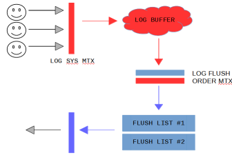
注：mtr直译是最小事务，事务针对的主体是page，是mysql对底层page的原子操作，主要应用在redo log和undo log。例如我们要向一个B+树索引中插入一条记录，此时要么插入成功，要么插入失败，这个过程就可以称为一个MTR过程，这个过程中会产生一组redo log日志，这组日志在做MySQL的崩溃恢复的时候，是一个不可分割的整体。
Note that when some mtr was adding its dirty pages (holding flush_order_mutex), another thread could be waiting to acquire the flush_order_mutex (even if it wanted to add pages to other flush list). In such case the waiting thread was holding log_sys_t::mutex (to maintain the total order), so any other thread that wanted to write to the log buffer had to wait… With the removal of these mutexes there is no guarantee on the order of the flush list.
请注意，当某些 mtr 添加其脏页（持有 flush_order_mutex）时，另一个线程可能正在等待获取 flush_order_mutex（尽管它想将页面添加到其它刷新列表）。在这种情况下，等待线程持有 log_sys_t::mutex（以维护总顺序），因此任何其他想要写入日志缓冲区的线程都必须等待……一旦删除这些互斥锁，就无法保证 刷新列表的顺序性。
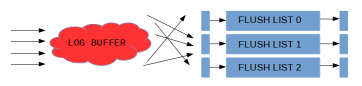
Second problem is that we cannot write the full log buffer to disk because there could be holes in the LSN sequence, because writes to the log buffer are not finished in any particular order.
第二个问题是，一旦写入日志缓冲区没有按任何特定顺序完成，LSN序列就可能存在遗漏，那么我们不能将完整的日志缓冲区写入磁盘。
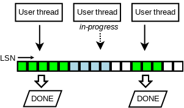
The solution for the second problem is to track which writes were finished, and for that we invented a new lock-free data structure.
第二个问题的解决方案是跟踪哪些写入已完成，为此我们发明了一种新的无锁数据结构。
The new data structure has a fixed size array of slots. The slots are updated in atomic way and reused in a circular fashion. A single thread is used to traverse and clear them, making a pause at a hole (empty slot). This thread updates the maximum reachable LSN(M).
新的数据结构有一个固定大小的槽数组。 插槽以原子方式更新并以循环方式重用。 有个单独线程用于遍历并清除它们，并在空槽处暂停。 该线程更新最大可达 LSN(M)。
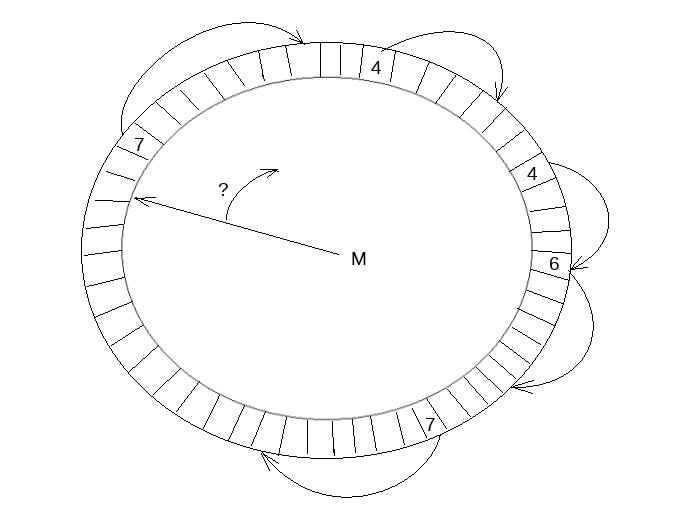
Two instances of this data structure are used: the recent_written and the recent_closed. The recent_written instance is used for tracking the finished writes to the log buffer. It can provide maximum LSN, such that all writes to the log buffer, for smaller LSN values, were finished. Potential crash recovery would need to end at such LSN, so it is a maximum LSN up to which we consider a next write. The slots are traversed by the same thread that writes the log buffer to disk afterwards. The proper memory ordering for reads and writes to the log buffer is guaranteed by the barriers set when reading/writing the slots.
使用了该数据结构的两个实例：recent_written 和 recent_closed。recent_written 实例用于跟踪已完成的对日志缓冲区的写入。它可以提供最大 LSN，所有小于该 LSN 值的日志缓冲区的写入都是已完成。潜在的崩溃恢复在重放日志时，需要最大 LSN 处结束，因此它是我们考虑下一次写入的最大 LSN。这些槽由随后被同一线程遍历将日志缓冲区写入磁盘。读/写槽时设置的屏障保证了日志缓冲区读写的正确内存顺序。
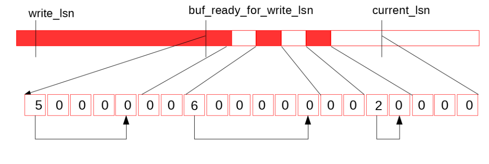
Let’s look at the picture above. Suppose that we finished one more write to the log buffer（让我们看看上面的图片。假设我们又完成了一次对日志缓冲区的写入）：
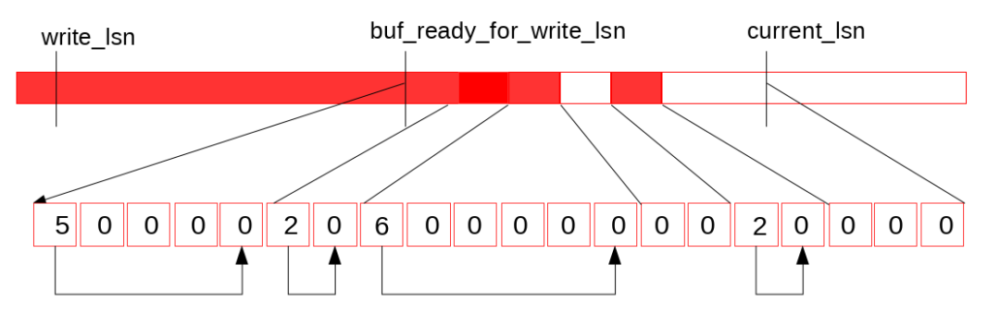
Now, the dedicated thread (log_writer) comes in, traverses the slots（现在，专用线程 (log_writer) 开始遍历插槽）：
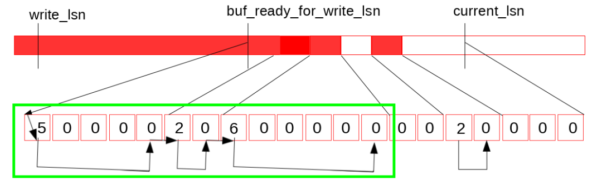
and updates the maximum LSN reachable without the holes – buf_ready_for_write_lsn（并更新无空白插槽可达的最大 LSN – buf_ready_for_write_lsn）:
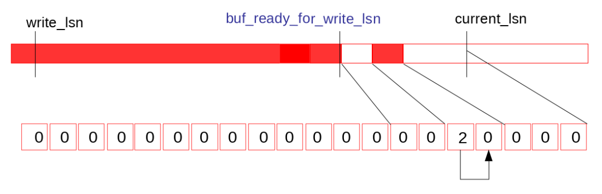
The recent_closed instance of the new data structure is used to address problems related to the missing log_sys_t::flush_order_mutex. To understand the flush list order problem and the lock free solution there is a little more detail required to explain.
使用新数据结构另外一个实例recent_closed用于解决与缺少 log_sys_t::flush_order_mutex 相关的问题。要理解刷新列表顺序问题和无锁解决方案，需要解释更多细节。
Individual flush lists are protected by their internal mutexes. But we no longer preserve the guarantee that we add dirty pages to flush lists in the order of increasing LSN values. However, the two constraints that must be satisfied are:
- Checkpoint – We must not write fuzzy checkpoint at LSN = L2, if there is a dirty page for LSN = L1, where L1 < L2. That’s because recovery starts at such checkpoint_lsn.
- Flushing – Flushing by flush list should always be from the oldest page in the flush list. This way we prefer to flush pages that were modified long ago, and also help to advance the checkpoint_lsn.
各个刷新列表受其内部互斥锁保护。但是我们不再保证按照 LSN 递增顺序将脏页添加到刷新列表中。但是，必须满足的两个约束是：
- Checkpoint — 我们不能在 LSN = L2 处写fuzzy checkpoint，如果 LSN = L1 有一个脏页，其中 L1 < L2。那是因为恢复从这样的 checkpoint_lsn 开始。
- Flushing——通过刷新列表刷新应该总是来自刷新列表中最旧的页面。这样我们更愿意刷新很久以前修改过的页面，也有助于推进 checkpoint_lsn。
注：Fuzzy Checkpoint 是数据库在运行时，在一定的触发条件下，刷新一定的比例的脏页进磁盘中，并且刷新的过程是异步的。
In the recent_closed instance we track the concurrent executions of adding dirty pages to the flush lists, and track the maximum LSN (called M), such that all executions, for smaller LSN values have completed. Before a thread adds its dirty pages to the flush lists, it waits until M is not that far away. Then it adds the pages and then reports the finished operation to the recent_closed.
在 recent_closed 实例中，我们跟踪将脏页添加到刷新列表的并发执行，并跟踪最大 LSN（称为 M），M满足条件：对于所有小于M的 LSN 的执行都已完成。在线程将其脏页添加到刷新列表之前，它会等待直到 M 距离不远。然后它添加页面，然后将完成的操作报告给 recent_closed。
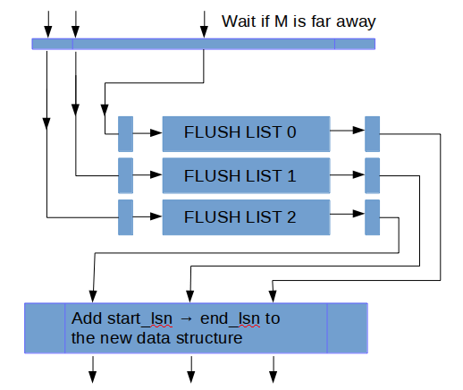
Let’s take an example. Suppose that some mtr, during its commit, copied all its log records to the log buffer for LSN range between start_lsn and end_lsn. It reported the finished write to the recent_written (the log records might be written to disk since now). Then the mtr must wait until it holds: start_lsn – M < L, where L is a constant that limits how much the order in flush lists might be distorted. After the condition holds, the mtr adds all the pages it made dirty to buffer pool specific flush lists. Now, let’s look at one of flush lists. Suppose that last_lsn is the LSN of the last page in the flush list (the earliest added there). In the old design it was the oldest modified page there, so it was guaranteed that all pages in the flush list had oldest_modification >= last_lsn. In the new design it is only guaranteed that all the pages in the flush list have oldest_modification >= last_lsn – L. The condition holds because we always wait if M is too far away before inserting pages.
让我们举个例子。 假设某些 mtr 在提交期间将其所有日志记录复制到 start_lsn 和 end_lsn 之间的 LSN 范围的日志缓冲区。 它向 recent_written 报告完成的写入（日志记录可能从现在开始写入磁盘）。 然后 mtr 必须等到它满足：start_lsn – M < L，其中 L 是一个常数，它限制刷新列表中的顺序可能被扭曲的程度。 条件成立后，mtr 将它的所有脏页添加到缓冲池特定刷新列表。 现在，让我们以其中一个刷新列表为例。 假设 last_lsn 是刷新列表中最后一个页面的 LSN（最早添加到那里的）。 在旧设计中，它是刷新列表的最旧修改页，因此可以保证刷新列表中的所有页面都有 oldest_modification >= last_lsn。 在新设计中，只保证刷新列表中的所有页面都有 oldest_modification >= last_lsn – L。这条件成立是因为在向刷新列表插入脏页之前检查M是否过远。
Proof. Let’s suppose we had two pages: P1 with LSN = L1, and P2 with LSN = L2, and P1 was added to flush list first, but L2 < L1 – L. Before P1 was inserted we ensured that L1 – M < L. We had M <= L2 then, because P2 wasn’t inserted yet, so we couldn’t advance M over L2. Hence L > L1 – M >= L1 – L2, so L2 > L1 – L. Contradiction – we assumed that L2 < L1 – L.
证明。假设我们有两个页面：LSN = L1 的 P1 和 LSN = L2 的 P2，P1 首先被添加到刷新列表，但是 L2 < L1 – L。在插入 P1 之前，我们确保 L1 – M < L。因为 P2 还没有插入，则 M <= L2，，所以不存在M > L2。因此 L > L1 – M >= L1 – L2，所以 L2 > L1 – L。矛盾 – 我们假设 L2 < L1 – L。
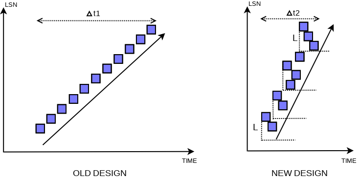
Therefore we relax the previous total order constraint, but at the same time, we provide good enough properties for the new order. The order in the flush list is distorted only locally and the missing dirty pages for smaller LSN values are possible only within the recent period of size L. That’s good enough for constraint #2, and it also allows to pick last_lsn – L as a candidate for checkpoint LSN, satisfying constraint #1.
因此我们放宽了之前的总序约束，但同时，我们为新的序提供了足够好的属性。刷新列表中的顺序仅在局部扭曲，并且只有在大小为 L 的最近一段时间内才有可能丢失较小 LSN 值的脏页。这对于约束 #2 来说已经足够了，它还允许选择 last_lsn – L 作为候选者 对于检查点 LSN，满足约束 #1。
This impacts the way recovery has to be done. Recovery logic could start from LSN which points to the middle of some mtr, in which case it needs to find the first mtr that starts afterwards and from there it can proceed with parsing. Now, let’s go back to our example. When all pages are added to the flush lists, a finished operation between start_lsn and end_lsn is reported to the recent_closed. Since then, the log_closer thread can traverse the finished addition, going from start_lsn to end_lsn, and update the maximum LSN up to which all additions are finished (setting M to end_lsn).
这会影响故障恢复的方式。 恢复逻辑可以从某个 mtr 中的某个 LSN 开始，在这种情况下，它需要找到故障恢复的第一个 mtr，然后从这个mtr开始进行解析恢复。 现在，让我们回到我们的例子。 当所有页面都添加到刷新列表时，start_lsn 和 end_lsn 之间完成的操作将报告给 recent_closed。 之后，log_closer线程可以遍历所有添加到刷新列表的页面，从start_lsn到end_lsn，并更新最大LSN为start_lsn和end_lsn的最大值（即设置M为end_lsn）。
Thanks to lock-free log buffer and relaxed order in flush lists, synchronization between commits of concurrent mini transactions is negligible!
由于无锁日志缓冲区和刷新列表中的松散顺序，并发mtr提交之间的同步可以忽略不计！
So far we described writing the page changes to the redo log buffer and adding the dirty pages to the buffer pool specific flush list. Let’s examine what happens when we need the log buffer written to disk.
到目前为止，我们介绍了如何将页面更改写入重做日志缓冲区，并将脏页添加到缓冲池特定刷新列表。 让我们检查一下当我们需要将日志缓冲区写入磁盘时会发生什么。
We have introduced dedicated threads for particular tasks related to the redo log writes. User threads no longer do writes to the redo files themselves. They simply wait when they need redo flushed to disk and it is not flushed yet.
我们为与重做日志写入相关的特定任务引入了专用线程。 用户线程不再自己写入重做文件。 他们只需等待尚未刷新的重做日志刷新到磁盘。
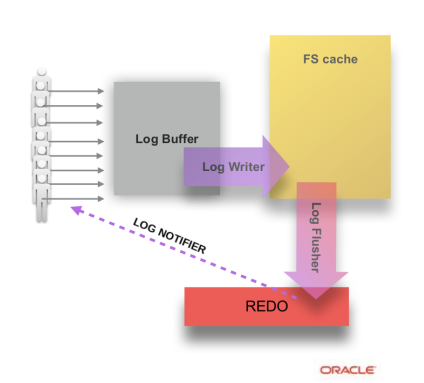
The log_writer thread keeps writing the log buffer to the OS page cache, preferring to write only full blocks to avoid the need to overwrite an incomplete block later. As soon as data is in the log buffer it may become written. In the old design the write was started when the requirement for written data occurred, in which case the whole log buffer was written. In the new design writes are driven by the dedicated thread. They may start earlier and the amount of data per write could be driven by a better strategy (e.g. skipping an incomplete yet block). The log_writer thread is also responsible for updates of the write_lsn (after write is finished).
log_writer 线程不断将日志缓冲区写入 OS 页面缓存，宁愿只写入完整的块以避免以后需要重写不完整的块。一旦数据在日志缓冲区中，它就可能被写入。在旧设计中，写入是在需要写入数据时开始的，在这种情况下，整个日志缓冲区都会被写入。在新设计中，写入由专用线程驱动。它们可能会更早开始，并且每次写入的数据量可以由更好的策略驱动（例如，跳过未完成的块）。log_writer 线程还负责 write_lsn 的更新（写入完成后）。
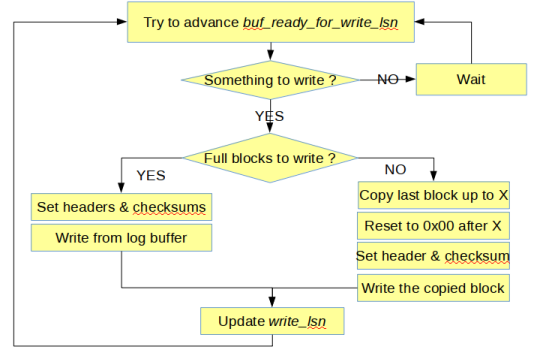
There is a log_flusher thread, which is responsible for reading write_lsn, invoking fsync() calls and updating flushed_to_disk_lsn. This way the writes to OS cache and the fsync() calls, are driven by two different threads in parallel at their own speeds, and the only synchronization between them happens inside internals of OS / FS (except the atomic reads and writes of write_lsn).
有一个log_flusher线程，负责读取write_lsn，调用fsync()和更新flushed_to_disk_lsn。 这样，写入 OS 缓存和 fsync() ，由两个不同的线程以它们自己的速度并行驱动，并且它们之间的唯一同步发生在 OS/FS 内部（write_lsn 的原子读写除外）。
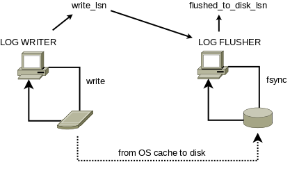
When a transaction commits, corresponding thread executes last mtr and then it needs to wait for the redo log flushed up to end_lsn of the mtr. In the old design, the user thread either started the fsync() itself or waited on the global IO completion event for the pending fsync() started earlier by other user thread (and then retried if needed).
当一个事务提交时，相应的线程执行最后一个mtr，然后它需要等待重做日志刷新完mtr的end_lsn。 在旧设计中，用户线程要么自己启动 fsync() ，要么等待其他用户线程早就启动但在挂起中的 fsync() 的全局 IO 完成事件（然后在需要时重试）。
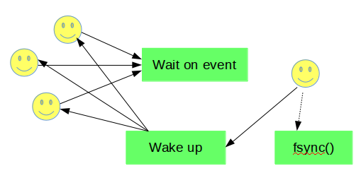
In the new design, it simply waits unless flushed_to_disk_lsn is already big enough, because it is always log_flusher thread which executes fsync(). The events used for waiting are sharded to improve the scalability. Consecutive redo blocks are assigned to consecutive shards in a circular manner. A thread waiting for flushed_to_disk_lsn >= X, selects a shard to which the X belongs. This decreases the synchronization required when attempting a wait. But what is even more important, thanks to such split, we can wake up only these threads that will be happy with the advanced flushed_to_disk_lsn (except some of those waiting in the last block).
在新设计中，用户线程只是等待，直到 flushed_to_disk_lsn 已经足够大，因为始终是 log_flusher 线程执行 fsync() 。用于等待的事件被分片以提高可扩展性。连续的重做块以循环的方式分配给连续的分片。等待 flushed_to_disk_lsn >= X 的线程选择 X 所属的分片。这减少了尝试等待时所需的同步。但更重要的是，由于这种拆分，我们可以只唤醒那些关注已前进的flushed_to_disk_lsn 的线程（除了一些在最后一个块中等待的线程）。
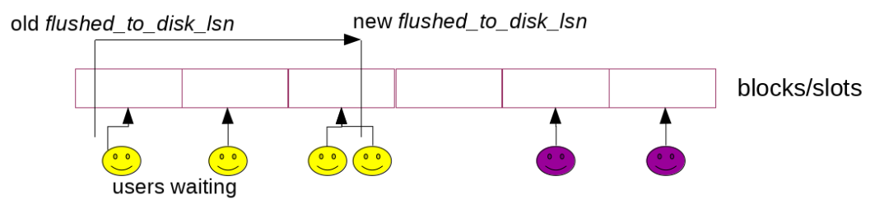
When flushed_to_disk_lsn is advanced, the log_flush_notifier thread wakes up threads waiting on intermediate values of LSN. Note that when log_flush_notifier is busy with the notifications, next fsync() call could be started within the log_flusher thread!
当 flushed_to_disk_lsn 前进时，log_flush_notifier 线程唤醒等待 LSN 中间值的线程。请注意，当 log_flush_notifier 忙于通知时，log_flusher也同时启动下一个 fsync() 的调用！
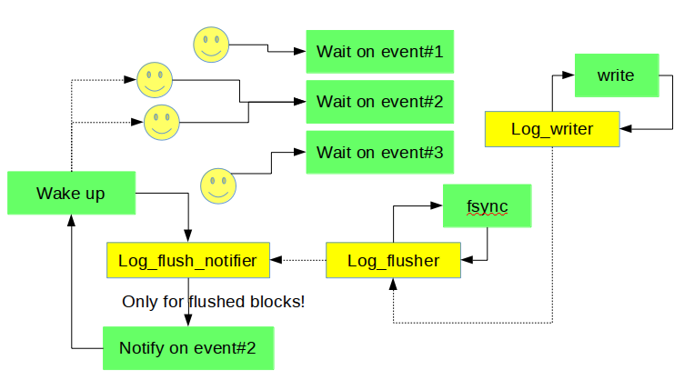
The same approach is used when innodb_flush_log_at_trx_commit =2, in which case users don’t care about fsyncs() that much and wait only for finished writes to OS cache (they are notified by the log_write_notifier thread in such case, which synchronizes with the log_writer thread on the write_lsn).
相同的方法也应用在innodb_flush_log_at_trx_commit =2 时，在这种情况下用户不太关心 fsyncs() 并且只等待完成对操作系统缓存的写入（在这种情况下他们由 log_write_notifier 线程通知，即是 与 log_writer线程 同步 write_lsn 上的线程）。
Because waiting on an event and being woken up increases latency, there is an optional spin-loop which might be used in front of that. It’s by default being used unless we don’t have too much free CPU resources on the server. You can control that via new dynamic system variables: innodb_log_spin_cpu_abs_lwm, and innodb_log_spin_cpu_pct_hwm.
因为等待事件通知唤醒会增加延迟，所以可以在它前面使用一个可选的自旋循环。 默认情况下使用它，除非我们在服务器上没有太多可用的 CPU 资源。 您可以通过新的动态系统变量来控制它：innodb_log_spin_cpu_abs_lwm 和 innodb_log_spin_cpu_pct_hwm。
As we mentioned at the very beginning, redo log can be seen as producer/consumer queue. InnoDB relies on fuzzy checkpoints from which potential recovery would need to start. By flushing dirty pages, InnoDB allows to move the checkpoint LSN forward. This allows us to reclaim free space in the redo log (blocks before the checkpoint LSN are basically considered free) and also makes a potential recovery faster (shorter queue).
我们在一开始就提到了，redo log可以看作是生产者/消费者队列。InnoDB 依赖于模糊检查点，潜在的恢复需要从这些检查点开始。通过刷新脏页，InnoDB 允许将检查点 LSN 向前移动。这允许我们回收重做日志中的可用空间（检查点 LSN 之前的块基本上被认为是可回收的）并且还可以使潜在的恢复更快（更短的队列）。
In the old design user threads were competing with each other when selecting the one that will write the next checkpoint. In the new design there is a dedicated log_checkpointer thread that monitors what are the oldest pages in flush lists and decides to write the next checkpoint (according to multiple criteria). That’s why no longer the master thread has to take care of periodical checkpoints. With the new lock free design we have also decreased the default period from 7s to 1s. This is because we can handle transactions much faster since the 7s were set (we write more data/s so faster potential recovery was the motivation for this change).
在旧设计中，用户线程在选择将写入下一个检查点的线程时相互竞争。 在新设计中，有一个专用的 log_checkpointer 线程，用于监视刷新列表中最旧的页面，并决定写入下一个检查点（根据多个标准）。 这就是为什么主线程不再需要处理定期检查点的原因。 通过新的无锁设计，我们还将默认周期从 7 秒减少到 1 秒。 这是相比以往设置了7s，为什么现在我们可以更快地处理事务，因为设置了（我们写入更多数据/秒，因此更快的潜在恢复是此更改的动力）。
The new WAL design provides higher concurrency when updating data and a very small (read negligible) synchronization overhead between user threads!
新的 WAL 设计在更新数据时提供了更高的并发性，并且用户线程之间的同步开销非常小（读取可忽略）！
Let’s have a look at simple comparison made between version just before the new redo log, and just after. It’s a sysbench oltp update_nokey test for 8 tables, each with 10M rows, innodb_flush_log_at_trx_commit = 1.
让我们看一下新重做日志之前和之后的版本之间的简单比较。 这是8个表的 sysbench oltp update_nokey 测试，每个表有 10M 行，innodb_flush_log_at_trx_commit = 1。
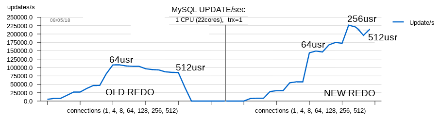